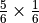
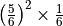
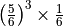
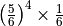
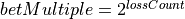

Roll-Counting Player Class¶
A common Craps strategy is to add bets as a kind of “hedge” against losing the line bet. This means that a player can have numerous working bets: the mandatory line bet, the behind the line odds bet, plus any additional hedge bets. For example, buying the 6 or 8 is a hedge that will pay out separately from the game overall.
We’ll tackle a particularly complex betting strategy. In this case, a player that judges that a game has gone “too long” without a successful resolution. This is a common fallacy in probability theory. A seven is not “due”. The odds of throwing a seven are always .
In order to handle this, we’ll need to have a larger number of independent bets, with independent betting strategies. The previous design will have to be expanded to allow for this.
In Roll-Counting Analysis we’ll examine the essential betting strategy. This will have large implications. We’ll look at them in Decomposing the Player and Implementing SevenCounter.
This will lead to a round of redesigning a number of classes. In BettingStrategy Design we’ll disentangle the game-based betting from the various betting strategies that dictate amounts.
We can then implement each betting strategy in a way that’s separate from each player. We’ll look at the details in:
Once we’ve separated betting strategies from game playing strategies, we can then create a number of more advanced players. These include
We’ll enumerate the deliverables in Roll-Counting Deliverables.
Roll-Counting Analysis¶
There is a distinction between one-roll odds and cumulative odds. The one roll odds of rolling a 7 are . This means that a Pass Line bet will win one time in six on the come out roll. The cumulative odds of rolling a 7 on a number of rolls depends on not rolling a seven (a chance) for some number of rolls, followed by rolling a 7. The odds are given in the following table.
Throws |
Rule |
Odds of 7 |
1 |
17% |
|
2 |
 |
31% |
3 |
 |
42% |
4 |
 |
52% |
5 |
 |
60% |
6 |
67% |
This cumulative chance of rolling a 7 suggests the odds of the game ending with a loss will grow because the cumulative odds of throwing a 7 grow as the game progresses also grows.
The idea here is the longer a game runs, the more likely it is to lose the initial Pass Line bet. Consequently, some players count the throws in the game, and effectively cancel their bet by betting against themselves with the Seven proposition.
Each game duration has a probability. The sum of all durations weighted by their probabilities is the expected value of the game duration. With a little coding, it’s apparent the expected duration is six throws. While games longer than that are possible, they are unexpected.
Important
Bad Odds
Note that the Seven proposition is a probability that pays “5 for 1”, (effectively ).
While the basic probability analysis of this bet is not encouraging, it does have an interesting design problem: the player now has multiple concurrently changing states:
They have Pass Line bet,
they can use a Martingale strategy for their Pass Line Odds bet,
they are counting throws, and using a Martingale strategy for a Seven proposition starting with the seventh throw of the game.
Either the class will become quite complex. Or we’ll have to decompose this class into a collection of simpler objects, each modeling the individual state changes.
Decomposing the Player¶
This leads us to consider the Player class as a composite object with a number
of states and strategies. It also leads us to design a separate class to
handle Martingale betting.
When we were looking at the design
for the various players in Design Cleanup and Refactoring, we glanced at the
possibility of separating the individual betting strategies from the
players, and opted not to. However, we did force each strategy to depend
on a narrowly-defined interface of the oddsBet(), win()
and lose() methods. We can exploit this narrow interface in teasing
apart the various strategies and rebuilding each variation of the Player class
with a distinct betting strategy object.
The separation of the Player class from the BettingStrategy class
involves taking the betting-specific information out of each Player subclass,
and replacing the various methods and fields with one or more BettingStrategy
objects.
In the case of Roulette players, this is relatively simple. We generally use just one bet with a variety of strategies.
In the case of Craps players, we often have two bets, one with a
trivial-case betting strategy where the bet never changes. We’ll need a special
NoChange class to define the strategy for the Pass Line.
We’ll need a Martingale (or 1-3-2-6, Cancellation,
or Fibonacci) for the Behind the Line Odds bet.
We can then redefine all Craps player’s bets using instances of these BettingStrategy objects.
The responsibilities of a BettingStrategy object include the following things:
Maintain a preferred
Outcomeinstance, used to buildBetinstances.Maintain a bet amount, changing the amount in response to wins and losses.
The existing win() and lose()
methods are a significant portion of these responsibilities. The oddsBet()
method of the various CrapsSimplePlayer classes embodies other
parts of this, however, the name is inappropriate and it has a poorly
thought-out dependency on the Player superclass.
The responsibilities of a Player instance are to
keep one or more betting strategies, so as to place bets in a game.
All of the Roulette players will construct a single BettingStrategy
object with their preferred Outcome instance. This is consistent
with this new design.
The various CrapsSimplePlayer classes
will have two BettingStrategy instances: one for the line
bet and one for the odds bet. This also fits with the player as a collection
of strategies.
The only difference among the simple
strategies is the actual BettingStrategy object,
simplifying the Player class hierarchy to a single Roulette
player and two kinds of Craps players: the stub player who makes only
one bet and the other players who make more than one bet and use a
betting strategy for their odds bet.
Implementing SevenCounter¶
Once we have this design in place, our SevenCounter class
can then be composed of three, separate betting strategies objects:
a Pass Line bet that uses the
NoChangestrategy;a Pass Line Odds bet that uses are more advanced betting strategy;
a Seven proposition bet that will only be used after seven rolls have passed in a single game.
The Pass Line Odds and Seven proposition bets can use any of the strategies we have built: Martingale, 1-3-2-6, Cancellation, or Fibonacci.
Currently, there is no method to formally notify the CrapsPlayer of
unresolved bets. The player is only told of winners and losers.
The opportunity to place bets indicates that the dice are being rolled. Additionally, the ability to place a line bet indicates that a game is beginning. We can use these two methods to count the throws in during a game, and reset the counter at the start of a game, effectively counting unresolved bets.
BettingStrategy Design¶
Fields¶
Constructors¶
Methods¶
-
BettingStrategy.createBet(self) → Bet¶ Returns a new
Betusing theoutcomeOutcomeand any other internal state of this object.
-
BettingStrategy.win(self, bet: Bet) → None¶ - Parameters
bet (
Bet) – The bet which was a winner
Notification from the
Playerthat theBetwas a winner. ThePlayerhas responsibility for handling money, this class has responsibility for tracking bet changes.
-
BettingStrategy.__str__(self) → str¶ Returns a string with the name of the class and appropriate current state information. For the superclass, it simply returns the name of the class. Subclasses will override this to provide subclass-specific information.
NoChangeBetting Class¶
-
class
NoChangeBetting¶ The
NoChangeBettingis a subclass ofBettingStrategythat uses a single, fixed amount for the bet. This is useful for unit testing, for modeling simple-minded players, and for line bets in Craps.
Fields¶
-
BettingStrategy.betAmount¶ This is the amount that will be bet each time. A useful default value is 1.
Constructors¶
Methods¶
-
NoChangeBetting.win(self, bet: Bet) → None¶ - Parameters
bet (Bet) – The bet which was a winner
Since the bet doesn’t change, this does nothing.
-
NoChangeBetting.lose(self, bet: Bet) → None¶ - Parameters
bet (Bet) – The bet which was a loser
Since the bet doesn’t change, this does nothing.
-
NoChangeBetting.__str__(self) → str¶ Returns a string with the name of the class,
outcome, andbetAmount.
MartingaleBetting Class¶
-
class
MartingaleBetting¶ The
MartingaleBettingclass is a subclass ofBettingStrategythat doubles the bet on each loss, hoping to recover the entire loss on a single win.
Fields¶
-
MartingaleBetting.lossCount¶ The number of losses. This is the number of times to double the pass line odds bet.
-
MartingaleBetting.betMultiple¶ The the bet multiplier, based on the number of losses. This starts at 1, and is reset to 1 on each win. It is doubled in each loss. This is always .
Constructors¶
Methods¶
-
MartingaleBetting.createBet(self) → Bet¶ Returns a new
Betusing theoutcomeOutcomeand thebetMultiple.
-
MartingaleBetting.win(self, bet: Bet) → None¶ - Parameters
bet (
Bet) – The bet which was a winner
Resets
lossCountto zero, and resetsbetMultipleto1.
-
MartingaleBetting.lose(self, bet: Bet) → None¶ - Parameters
bet (
Bet) – The bet which was a loser
Increments
lossCountby1and doublesbetMultiple.
-
NoChangeBetting.__str__(self) → str Returns a string with the name of the class,
outcome, the currentbetAmountandbetMultiple.
Bet1326Betting Class¶
Bet1326Betting is a subclass of BettingStrategy
that advances the bet amount through a sequence of multipliers on each
win, and resets the sequence on each loss. The hope is to magnify the
gain on a sequence of wins.
Fields¶
-
Bet1326Betting.state¶ This is the current state of the 1-3-2-6 betting system. It will be an instance of one of the four subclasses of
Player1326State: No Wins, One Win, Two Wins or Three Wins.
Constructors¶
-
Bet1326Betting.__init__(self, outcome: Outcome) → None¶ - Parameters
outcome (Outcome) – The outcome on which this strategy will create bets
Initializes this betting strategy with the given
Outcome. Creates an initial instance ofPlayer1326NoWinsusingoutcome.
Methods¶
-
Bet1326Betting.createBet(self) → Bet¶ Returns a new
Betusing thecurrentBet()method from thestateobject.
-
Bet1326Betting.win(self, bet: Bet) → None¶ - Parameters
bet (
Bet) – The bet which was a winner
Determines the next state when the bet is a winner. Uses
state’snextWon()method and saves the new state instate.
CrapsOneBetPlayer class¶
-
class
CrapsOneBetPlayer¶ The
CrapsOneBetPlayerclass is a subclass ofCrapsPlayerand places one bet in Craps. The single bet is one of the bets available on the come out roll (either Pass Line or Don’t Pass Line). This class implements the basic procedure for placing the line bet, using an instance ofBettingStrategyto adjust that bet based on wins and losses.
Fields¶
-
CrapsOneBetPlayer.lineStrategy¶ An instance of
BettingStrategythat applies to the line bet.Generally, this is an instance of
NoChangeBettingbecause we want to make the minimum line bet and the maximum odds bet behind the line.
Constructors¶
-
CrapsOneBetPlayer.__init__(self, table: Table, lineStrategy: BettingStrategy) → None¶ Constructs the
CrapsOneBetPlayerwith a specificTablefor placing best. This will save the givenBettingStrategyinlineStrategy.
Creation of A Player
passLine = table.dice.get("Pass Line")
betting = MartingaleBetting(passLine)
passLineMartin = CrapsOneBetPlayer(betting)
Methods¶
-
CrapsOneBetPlayer.placeBets(self) → None¶ Updates the
Tablewith the variousBetinstances. There is one basic betting rule.If there is no line bet, create the line
Betinstance from thelineStrategy.Be sure to check the price of the
Betbefore placing it. Particularly, Don’t Pass Odds bets may have a price that exceeds the player’s stake. This means that theBetobject must be constructed, then the price must be tested against thestaketo see if the player can even afford it. If thestakeis greater than or equal to the price, subtract the price and place the bet. Otherwise, simply ignore it.
-
CrapsOneBetPlayer.win(self, bet: Bet) → None¶ - Parameters
bet (
Bet) – The bet which was a winner
Notification from the
Gamethat theBetwas a winner. The amount of money won is available viatheBetwinAmount(). If the bet’sOutcomematches thelineStrategy‘sOutcome, notify the strategy, by calling thelineStrategy‘swin()method.
-
CrapsOneBetPlayer.lose(self, bet: Bet) → None¶ - Parameters
bet (
Bet) – The bet which was a loser
Notification from the
Gamethat theBetwas a loser. If the bet’sOutcomematches thelineStrategy‘sOutcome, notify the strategy, by calling thelineStrategy‘slose()method.
CrapsTwoBetPlayer class¶
-
class
CrapsTwoBetPlayer¶ The
CrapsTwoBetPlayerckass is a subclass ofCrapsOneBetPlayerand places one or two bets in Craps. The base bet is one of the bets available on the come out roll (either Pass Line or Don’t Pass Line). In addition to that, an odds bet (either Pass Line Odds or Don’t Pass Odds) can also be placed. This class implements the basic procedure for placing the line and odds bets, using two instances ofBettingStrategyto adjust the bets based on wins and losses.Typically, the line bet uses an instance of
NoChangeBetting.The odds bets, however, are where we want to put more money in play.
Fields¶
-
CrapsTwoBetPlayer.oddsStrategy¶ An instance of
BettingStrategythat applies to the line bet.
Constructors¶
-
CrapsTwoBetPlayer.__init__(self, table: Table, lineStrategy: BettingStrategy, oddStragtegy: BettingStrategy) → None¶ Constructs the
CrapsTwoBetPlayerwith a specificTablefor placing bets. This will save the two givenBettingStrategyinstances inlineStrategyandoddsStrategy.The superclass handles the
lineStrategy. This subclass extends that definition with theoddsStrategy.
Methods¶
-
CrapsTwoBetPlayer.placeBets(self) → None¶ Updates the
Tablewith the variousBetobjects. There are two basic betting rules.If there is no line bet, create the line
Betinstance from thelineStrategy.If there is no odds bet, create the odds
Betinstance from theoddsStrategy.
-
CrapsTwoBetPlayer.win(self, bet: Bet) → None¶ - Parameters
bet (Bet) – The bet which was a winner
Notification from the
Gamethat theBetwas a winner. The superclass handles the money won and the line bet notification. This subclass adds a comparison between the bet’sOutcomeand theoddsStrategyobject’sOutcome; if they match, it will notify the strategy, by calling theoddsStrategyobject’swin()method.
-
CrapsTwoBetPlayer.lose(self, bet: Bet) → None¶ - Parameters
bet (Bet) – The bet which was a loser
Notification from the
Gamethat theBetwas a loser. The superclass handles the line bet notification. If the bet’sOutcomematches theoddsStrategyobject’sOutcome, notify the strategy, by calling theoddsStrategyobject’slose()method.
CrapsSevenCountPlayer class¶
-
class
CrapsSevenCountPlayer¶ The
CrapsSevenCountPlayerclass is a subclass ofCrapsTwoBetPlayerand places up to three bets in Craps. The base bet is a Pass Line bet. In addition to that, a Pass Line Odds bet can also be placed. If the game runs to more than seven throws, then the “7” proposition bet (at 4:1) is placed, using the Martingale strategy.The Pass Line bet uses an instance of
NoChangeBetting. The Pass Line Odds bet uses an instance ofBet1326Betting.
Fields¶
-
CrapsSevenCountPlayer.sevenStrategy¶ The
BettingStrategyfor the seven bet. Some argue that this should be a no-change strategy. The bet is rare, and – if effect – the player bets against them self with this. One could also argue that it should be a Martingale because each throw after the seventh are less and less likely to win.
-
CrapsSevenCountPlayer.throwCount¶ The number of throws in this game. This is set to zero when we place a line bet, and incremented each time we are allowed to place bets.
Constructors¶
-
CrapsSevenCountPlayer.__init__(self, table: Table) → None¶ This will create a
NoChangeBettingstrategy based on the Pass LineOutcome. It will also create aMartingaleBettingstrategy based on the Pass Line OddsOutcome. These will be given to the superclass constructor to save the game, the line bet and the odds bet. Then this constructor creates aBet1326Bettingstrategy for the Seven PropositionOutcome.
Methods¶
-
CrapsSevenCountPlayer.placeBets(self) → None¶ Updates the
Tablewith the variousBetinstances. There are three basic betting rules.If there is no line bet, create the line
Betfrom thelineStrategy. Set thethrowCountto zero.If there is no odds bet, create the odds
Betfrom theoddsStrategy.If the game is over seven throws and there is no seven proposition bet, create the proposition
Betfrom thesevenStrategy.
Each opportunity to place bets will also increment the
throwCountby one.
Roll-Counting Deliverables¶
There are two groups of deliverables for this exercise. The first batch of deliverables are the new Betting Strategy class hierarchy and unit tests. The second batch of deliverables are the two revised Craps Player classes, the final Roll Counter Player, and the respective unit tests.
Also, note that these new classes make the previous CrapsSimplePlayer,
CrapsMartingale, Craps1326 and CrapsCancellation
classes obsolete. There are two choices for how to deal with this
change: remove and re-implement. The old classes can be removed, and the
Simulator reworked to use the new versions. The alternative is to
re-implement the original classes as Facade over the new classes.
Betting Strategy class hierarchy. There are four classes, with associated unit tests in this group of deliverables.
The
BettingStrategysuperclass. This class is abstract; there is no unit test.The
NoChangeBettingclass.A unit test for the
NoChangeBettingclass. This will simply confirm that thewin()andlose()methods do not change the bet amount.The
MartingaleBettingclass.A unit test for the
MartingaleBettingclass. This will confirm that thewin()method resets the bet amount andlose()method doubles the bet amount.The
Bet1326Bettingclass.A unit test for the
Bet1326Bettingclass. This will confirm that thewin()method steps through the various states, and thelose()method resets the state.
CrapsPlayer class hierarchy. There are three classes, each with an associated unit test in this group of deliverables.
The
CrapsOneBetPlayerclass.A unit test for the
CrapsOneBetPlayerclass. One test can provide a No Change strategy for a Pass Line bet to verify that the player correctly places Line bets. Another test can provide a Martingale strategy for a Pass Line bet to verify that the player correctly changes bets on wins and losses.The
CrapsTwoBetPlayerclass.A unit test for the
CrapsTwoBetPlayerclass. One test can provide a No Change strategy for a Pass Line bet and a Martingale strategy for a Pass Line Odds bet to verify that the player correctly places Line bets and correctly changes bets on wins and losses.The
CrapsSevenCountPlayerclass.A unit test for the
CrapsSevenCountPlayerclass. This will require a lengthy test procedure to assure that the player correctly places a Seven proposition bet when the game is over seven throws long.
Looking Forward¶
We’ve build a detailed, and reasonably complete simulation of craps. We’ve also refactored the players and the betting strategies to allow us to compose a player with a variety of complex betting behaviors. This allows us to evaluate the various strategies to see which one loses money the slowest.
In the long run, they all lose.
In the next chapter, we’ll summarize the various components built so far.